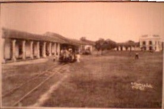

|
 |
| CÁRDENAS a principios del siglo XX. |
La Revolución Mexicana
La Villa de Sanantonio de Cárdenas se Convierte en Ciudad
Por iniciativa del diputado Salvador de la Rosa, integrante de la XXIV legislatura local,
se erigió la Villa de Cárdenas en Ciudad por Decreto N. 21, fechado el 28 de mayo
de 1910. Éste reconocimiento se debía a los avances y al progreso que día a día se
acentuaba en la ciudad, la cual desde fines del siglo XIX se extendía, desesperada,
buscando sus puntos cardinales. A principios del siglo XX, ya funcionaban en Cárdenas
los ingenios azucareros de Santa Rosalía, Nueva Zelandia y Santa Rita. Algunos de los
Jefes políticos de ese tiempo que hicieron historia en Cárdenas: don Manuel Briseño, que
empedró las calles en 1903; don Manuel Paniagua, el organizador de la fiesta de San
Antonio, cada 13 de junio. En el ámbito privado, don Polo Valenzuela fué el gran propietario.
El iniciador, propulsor y proseguidor de los grandes negocios madereros, navieros, agrícolas y
comerciales. Precisamente él instaló en el centro de Cárdenas los primeros rieles para
tranvías, los cuales eran jalados por animales. En esos tiempos, se viajaba a la capital
de Tabasco por río, pero la construcción de una nueva carretera (46 km) de Villahermosa
a Cárdenas, terminó con el tránsito fluvial.
La Revolución Mexicana Llega a Cárdenas
Una de las grandes glorias de cárdenas es haber tomado parte importante en la Revolución
Mexicana. Comenzando en 1910 con el caudillo Ignacio Gutiérrez Gómez, seguidor del
maderismo, nacido en Cárdenas e
hijo del cunduacanense Quirino Gutiérrez (quién además era socio y primo del rico Polo
Valenzuela) y de la comlacalquense Cleménica Gómez. Gutiérrez Gómez había estado en contacto
con los Flores Magón desde 1901. Leía el periódico Regeneración y las proclamas contra
Porfirio Díaz. Por ello fue perseguido encarnizadamente y por ello hubo de huir hacia
Guatemala. Sus críticas hacia el régimen le costaron el incendio de su rancho, el
encarcelamiento de su hermano Policarpo y el secuestro de su hijo Pedro. Gutiérrez Gómez
pronto regresó a Tabasco, donde organizó al Ejército Libertador, se levantó en armas
en el municipio de Cárdenas y estableció su cuartel general en el pueblo de San Felipe
Río nuevo. Rápidamente la revolución se extendió por toda la Chontalpa, desde Cárdenas,
Huimanguillo, Comalcalco. Paraíso, Cunduacán y Nacajuca hasta Pïchucalco; Gutiérrez Gómez
fué entonces designado por sus compañeros general y jefe del Ejército Libertador de Tabasco
y desde Cunduacán lanzaron una proclama al pueblo tabasqueño, donde expusieron que los motivos
de su levantamiento eran rescatar la libertad y los derechos del pueblo, el restablecimiento de
la justicia y el sufragio efectivo y la no reelección.
Al Ejército Libertador se le unieron otros jefes revolucionarios como Fernando y Ernesto Villar,
Pedro Sánchez Magallanes, Aurelio y Ramón Sosa Tórres, Isidro Cortés, José Mercedes Gamas, Áureo L.
Calles, Nicolás Aguilera, Pedro C. Colorado y José E. Domínguez, entre otros. Se organizaron en
guerrillas, pero en el enfrentamiento abierto que sostuvieron en Aldama el 21 de abril de 1911,
fueron derrotados por el ejército federal, y en ese combate muere el general Ignacio Gutiérrez
Gómez, caudillo de la Revolución Mexicana en Tabasco. El Ejército Libertador continuó la lucha
hasta la toma final de San Juan Bautista, el 28 de junio de 1911, un mes después de que en
el plano nacional la revolución maderista había logrado la renuncia del dictador Porfirio Díaz.
La Rebelión Armada de 1914
Cárdenas se hizo revolucionario desde 1910, con Ignacio Gutiérrez Gómez. Como fué "juarista"
en 1863, con Andrés sánchez Magallanes. Cayó Porfirio Díaz, subió Madero. Y en Tabasco el
antirreleccionista Manuel Mestre Ghigliazza asumió la gubernatura. Pero llegó la decena trágica,
que culminó con el asesinato del Presidente de la República, Fco. I. Madero el 22 de febrero
de 1913. Entonces, Cárdenas nuevamente afiló sus armas para vengar el agravio. Dos días después
del asesinato de Madero, el general cardenense Carlos Greene Ramírez y Aurelio Sosa Tórres
acordaron rebelarse contra la usurpación de Victoriano Huerta. Carlos Greene se entrevistó
con Venustiano Carranza, recibiendo armas, refuerzos y recursos para los grupos revolucionarios
de la Chontalpa. Con este apoyo, el Ejército Constitucionalista de Occidente logró en Paraíso
el triunfo definitivo sobre las fuerzas huertistas.
La lucha armada terminó en Tabasco el 1 de septiembre de 1914 con la entrada del ejército
revolucionario a San Juan Bautista. En febrero de 1919, Carlos Greene resultó electo
gobernador constitucional de Tabasco, el cual se preocupó por llevar el progreso y la justicia
social a todo Tabasco y, en especial, al campo.
|
Los Próceres Revolucionarios
* Ignacio
Gutiérrez Gómez
* Ramón sosa Tórres
* Aurelio Sosa Tórrez
* Carlos Greene
|